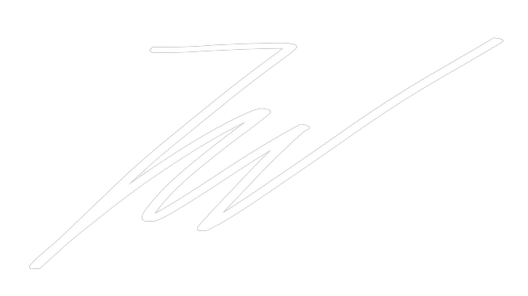
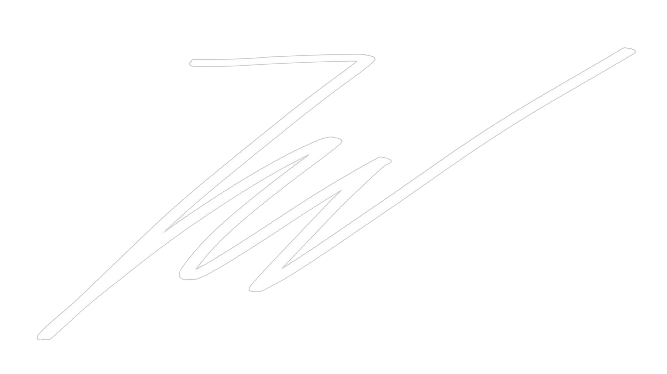
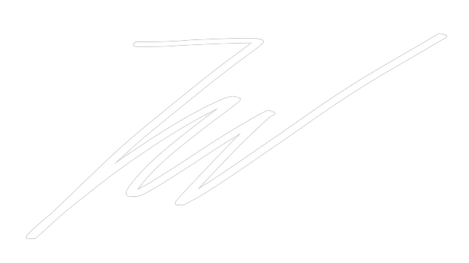
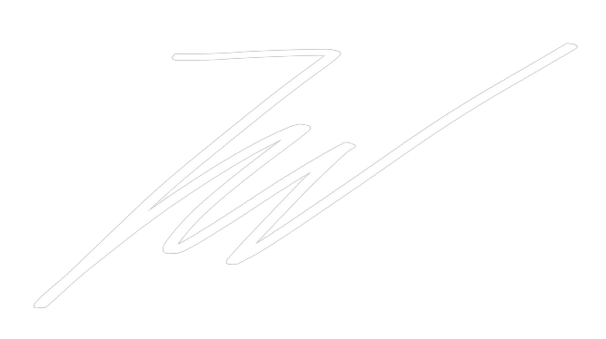

Jakub Wozniak
Cumulative Portfolio
 
Honours Computer Science Co-op Student

Honours Computer Science Co-op Student
University of Guelph, 2019 - 2024

 
Honours Computer Science Co-op Student

Honours Computer Science Co-op Student
Thanks for checking out this website. Ever since I was a child I have
been fascinated by computers and the seemingly mystic aura surrounding
them. Throughout my childhood, I would enjoy browsing the early days of
YouTube, investigating my mother's Blackberry Bold and playing Pokemon
Emerald on my Gameboy Advance. I look back throughout my life and at
each stage in my journey there is something that has always remained a
constant although it was perpetually changing;
computers.
Since that time, I have developed a good amount of knowledge in the
field of computing. I enjoy tough technical challenges and always put
forth my best efforts towards anything I do when it comes to the field
that I love. My name is Jakub Wozniak and I am currently 20 years old. I
was born in Stalowa Wola, Poland and I immigrated to Canada with my
family when I was 4 years old. Currently, I am studying at the
University of Guelph, where I am pursuing a Bachelors Degree in Computer
Science as well as completing a Business minor on the side. I hope this
website can serve as a tool that grants a view into my life with
computers.

Everglade Messaging is an online messaging web app which was created and designed as a side project. Both the backend and the frontend of the application were created by two developers. The project utilized technologies such as React.js, Heroku, Flask, and Google Firebase. The application can be found at https://everglade-messaging.herokuapp.com/
Github Frontend Repo Github Backend RepoThis project contains 7 assignments completed for a Data Structures course. All of the data structures were written in C over the course of the semester and the repo contains the following: A1: Bit Manipulation, A2: Arrays, A3: Linked Lists, A4: Trees, A5: Hash Tables, A6: Advanced Hash Tables, A7: Graphs (Unbeatable Tic-Tac-Toe Computer)
Github Repo
A Minimalistic Rogue 3.6.X (a role-playing video game characterized by a dungeon crawl through procedurally generated levels, turn-based gameplay and grid-based movement) clone done for an Object-Oriented Programming course. All code was written in Java heavily focusing on the object oriented side of programing.
Github RepoStudent Software Developer, Summer 2021
In this section, I will be presenting a full overview of my first co-op workterm with Xiris Automation Inc. in Burlington Ontario as a Student Software Developer. Presented below is information about my S21 co-op employer, a summary of my learning goals, a comprehensive review of the work I completed over the work term and general conclusions drawn from my work term experience.
Over the Summer 2021 semester I had the pleasure of working for a company by the name of Xiris Automation Inc. in Burlington, Ontario. Xiris specializes in developing machine vision hardware for process and quality control. They have been in the business for over 30 years and have developed high quality cameras focused on weld monitoring and inspection. Xiris’ products provide manufacturers with the ability to accurately detect, recognize and interpret quality defects in their goods. Their cameras also come with a software development kit, Xiris Weld SDK, which allows users to maximize the potential of the cameras and obtain useful machine vision information during the welding process. Xiris has fostered a very welcoming and supportive work environment that ultimately leads to great internal productivity and collaboration.
Problem Solving
Goal: My first goal I would like to achieve through my Summer 2021 co-op is to improve my problem-solving skills. I believe problem solving is one of the most important assets for a programmer as constantly and unexpectedly issues can arise in code. I believe having the skill to quickly identify those problems and deal with them in an efficient manner is extremely beneficial.
Action Plan: In order to achieve this goal, I will be placed in a real-world tech environment where I will have a lot of opportunities to problem solve. Any software I write will mostly likely have bugs and other issues I will have to learn to overcome. These may be challenging but will help me grow in my field. In a real world setting I will be more motivated than ever to improve myself as a coder and learn the best methods of trouble shooting which I can transfer into my future career path.
Measure of Success: The way I would measure my success is looking back and seeing if the quality and efficiency of my solutions to problems has increased. Do I try to think more analytically, do I analyze a bunch of options and pick the best one?
Reflection: My efficiency of problem-solving has improved over these past four months. Given a lot of autonomy and having to make a lot of decisions, I needed to learn to think analytically and how to make the best decisions. This skill will be extremely useful for any other tech jobs I will have going forward in my career.
Technological Literacy
Goal: My second goal I would like to achieve through my co-op is to improve my technological literacy. Having a lot of different programming languages and experiences in your toolbox is very advantageous in the technology industry. Being able to adapt to your environment using your prior knowledge from past projects and studies is a valuable skill, which I believe I can grow through this placement.
Action Plan: In order to achieve this goal, I will learn various new technologies and ways to program. The experience I gain from a real job in my field will be invaluable for me. Primarily I will be polishing my C# skills while also learning new tricks and skills that will accelerate my programming to the next level. Furthermore, I will be learning new technologies to expand my technological literacy such as C++ and SVN and gaining experience working in a real-life setting.
Measure of Success: The way I would measure my success for this goal would be to see how much I have grown in my technological literacy. Have I learned new skills and technologies that will assist me further in my career? Did I effectively absorb all the new information I learned throughout my placement?
Reflection: My work term at Xiris definitely helped me achieve my technological literacy goals. I learned and polished my knowledge of two new languages: C# and C++, as well as a new software version control system, Apache Subversion. This knowledge will definitely aid me in future jobs and tech opportunities.
Personal Organization/Time Management
Goal: My last goal I would like to achieve through my co-op placement is to be better organized and better manage my time. Sometimes I have time management issues and this placement is extremely valuable in helping me solve these issues and grow as a person. I believe being organized heavily increases productivity and is a very useful skill to adapt not only in a workplace setting but in day to day life.
Action Plan: I will be provided a lot of autonomy in my setting and will need to learn how to manage my time wisely. I prefer working on site because it motivates me to install routine values into my day to day life and pushes me to always be punctual. Planning out deadlines for myself will be crucial in helping me become more organized and more efficient in my work.
Measure of Success: The way I would measure my success for this final goal is have I improved my organization and time management? Not exclusively in a workplace setting but have the values I learned throughout my placement helped me become not only a more organized, well rounded worker but also a more organized, well rounded person.
Reflection: Looking back I believe I acheived my organization and time management goals. My ability to focus has improved and I always make sure to have enough time to spare when completing a task.
First Major Project
In my three months working at Xiris Automation Inc, I feel like I have accomplished a lot and learned a tremendous amount. For my first major project, I was tasked with creating a document management system in C# for Xiris’ internal documents. This Windows application was to be designed with the ability to create, read, update and delete documents that were subsequently stored online in a Sharepoint server. Each document was also to be reported in a database that provided further information on it. Xiris had a previous outdated document system which stored the files locally that I could use as a reference to see what they were looking for in terms of functionality. This project came with its fair share of challenges. Having previously only used C# in high school, I needed to quickly adapt to my environment and reach a level of literacy with C# that would allow me to complete my task. I think I managed to do this quite well and I feel very confident in my C# abilities following this work term. Another challenging portion was learning how to connect everything to Sharepoint and figuring out how to use the C# Sharepoint CSOM (Client-Side Object Model). Learning the Sharepoint CSOM resulted in a good amount of researching online and reading through the documentation. When I completed the project, the day came where we finally had to publish and implement the new Sharepoint based document management system. This required uploading all local documents to the Sharepoint Online server and releasing the new software onto the company servers. Most of this process went smoothly, however a small oversight occurred. The Sharepoint login system I created failed to take 2FA into account which effectively nullified the whole project I created. Rather than getting discouraged, I looked into solutions for this and swiftly found a way better method of implementing the Sharepoint login which drastically improved the end result. The new document management system was successfully released on the anticipated date.
Second Major Project
For my second major project while working at Xiris Automation, I was asked to familiarize myself with their Weld SDK and simulate the process of installing and using the SDK from the perspective of a first-time user noting any flaws with the process. I read through all of the documentation for the software development kit and noted any spelling mistakes or sections that might be perceived as unclear. Once I was finished with the quality assurance, I was then asked to create a couple of samples for the machine vision aspect of the SDK. This was one of the most interesting parts of my work term at Xiris. I was provided with one of their cameras and wrote C++ code samples that demonstrate the different machine vision functionalities available in the SDK. These samples would be included in the SDK when installed. Before this project, I have never used C++, which was more difficult to grasp than C# given its syntax. Eventually after looking through some C++ samples online and the Weld SDK documentation, I successfully managed to write some functioning machine vision code that reported on the camera’s video stream in real time.
The experience I have gained from my first ever co-op position was invaluable. I really enjoyed being put in a real-world technological environment at an established company and feeling a sense of progress with every task I completed. There were ups and downs to my work term, but each challenge only forced me to become a better worker and a better person. I am grateful that I had this opportunity and I am extremely excited to see what the future has in store for me.
I would like to thank Xiris Automation Inc. for allowing me to grow and learn many new skills while being surrounded by a friendly and supportive environment. I would also like to thank my manager John Stevenson for being there with me from the interview process to my final day. John was always extremely understanding and supportive, he really allowed me to develop new skills without being constrained by the fear of failure. To all my other co-workers, thank you for welcoming me with open arms and always having my back whenever I needed it. I am truly thankful to have been able to spend this Summer with everyone at Xiris and I look forward to seeing if our paths ever cross again.
Web Developer, Fall 2021